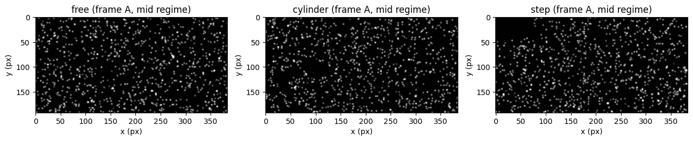
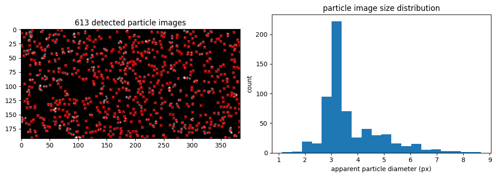
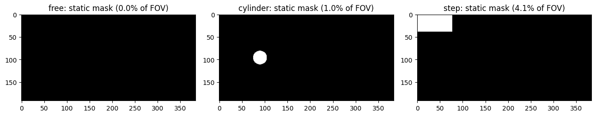
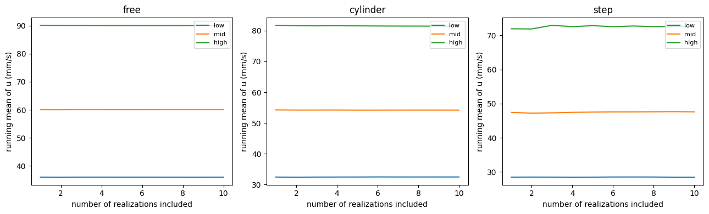

# Standard imports
import pathlib, shutil, time, io, contextlib
import numpy as np
import matplotlib.pyplot as plt
import imageio.v3 as iio
from openpiv import tools, windef
from skimage.measure import label, regionprops
@contextlib.contextmanager
def quiet():
# OpenPIV's windef.piv() is very verbose!
with contextlib.redirect_stdout(io.StringIO()):
yield
# synthetic data generator for the examples in this notebook
import sys
sys.path.insert(0, '.')
from synthetic_piv import (
render_pair, render_sequence, velocity_field, solid_mask,
reynolds_number, shedding_frequency,
FLOWS, REGIMES, IMG_SHAPE, CAL, FOV_MM,
CYL_X_MM, CYL_Y_MM, CYL_D_MM, STEP_X_MM, STEP_H_MM, STEP_LR_MM,
)
np.random.seed(0)
%matplotlib inline5 Processing
This notebook turns the “Measurements” assignment (Chapter 4) into a runnable, guided pipeline, applied to your own images.
It is written as a generic template: the same code processes all three flows studied during the lab sessions — a free stream, the wake of a cylinder, and the flow behind a backward-facing step — at the three pump regimes. This is not meant to be a complete overview.
About the examples shown below. This statement was written before any student data existed, so the walkthrough is illustrated with a synthetic placeholder dataset (
synthetic_piv.py) — just to orient you towards the analyses expected at each step. SetDATA_SOURCEto"real"in §1 and everything below runs the same way on your own images instead; the few places marked 🔁 are where real data needs a value you measure yourself rather than one we generated.
This builds directly on:
- Chapter 1-2 (cross-correlation,
extended_search_area_piv) - Chapter 3 (multi-pass, window deformation,
PIVSettings/windef.piv, vector validation)
5.1 Dataset
FLOWS are the three configurations studied in the lab ("free", "cylinder", "step"), each run at three regimes ("low", "mid", "high") corresponding to the three pump settings.
Each sequence of images must sit in data/real/<flow>/<regime>/ as a series of .png files.
# ============================================================================
# 🔁 DATA SOURCE -- this is the one switch to flip once your own images are
# ready.
# ============================================================================
DATA_SOURCE = "synthetic" # "synthetic" or "real"
# 🔁 real only: time between the two consecutive frames.
DT_PIV_REAL = 0.001
DT_FRAME_REAL = {"low": None, "mid": None, "high": None}
N_REALIZATIONS_SYNTHETIC = 10 # only used to generate the synthetic placeholder
DT_PIV_SYNTHETIC = 0.06 # s, only used to generate the synthetic placeholder
# One folder per case: DATA_ROOT/<flow>/<regime>/*.png.
DATA_ROOT = pathlib.Path('data/synthetic' if DATA_SOURCE == "synthetic" else 'data/real')
DT_PIV = DT_PIV_SYNTHETIC if DATA_SOURCE == "synthetic" else DT_PIV_REAL
def frames_of(flow, regime):
"""Image sequence of one case, in natural order."""
return tools.natural_sort(list((DATA_ROOT / flow / regime).glob('*.png')))
def generate_synthetic_dataset():
"""Write the placeholder sequences: for each case, 2 x N_REALIZATIONS_SYNTHETIC
frames (A, B, A, B, ...) as DATA_ROOT/<flow>/<regime>/frame_NNNN.png."""
if DATA_ROOT.exists():
shutil.rmtree(DATA_ROOT)
for flow in FLOWS:
for regime in REGIMES:
out_dir = DATA_ROOT / flow / regime
out_dir.mkdir(parents=True)
rng_seed_base = hash((flow, regime)) % 10_000
for i in range(N_REALIZATIONS_SYNTHETIC):
t_sample = np.random.default_rng(rng_seed_base + i).uniform(0, 10)
a, b, _ = render_pair(flow, regime, t=t_sample, dt=DT_PIV_SYNTHETIC,
seed=rng_seed_base + i)
iio.imwrite(str(out_dir / f'frame_{2 * i:04d}.png'), a)
iio.imwrite(str(out_dir / f'frame_{2 * i + 1:04d}.png'), b)
np.random.seed(0)
if DATA_SOURCE == "synthetic":
generate_synthetic_dataset()
for flow in FLOWS:
for regime in REGIMES:
n_frames = len(frames_of(flow, regime))
if n_frames == 0:
raise FileNotFoundError(
f"No .png frames found in {DATA_ROOT / flow / regime}. Convert your "
f"recorded sequence for this case there first (see the Appendix of Chapter 4)."
)
if n_frames % 2:
raise ValueError(
f"{DATA_ROOT / flow / regime}: odd number of frames ({n_frames}) -- "
f"pairing with '(1+2),(3+4)' (§5) needs an even number, remove the extra one."
)
print(f" {flow:10s} {regime:6s} -> {n_frames} frames")
IMAGE_SHAPE = iio.imread(frames_of(FLOWS[0], list(REGIMES)[0])[0]).shape
print(f"image shape: {IMAGE_SHAPE}")image shape: (192, 384)print(f"{'flow':10s} {'regime':6s} {'U0 (mm/s)':>10s} {'Re':>8s} {'f_shed (Hz)':>12s}")
for flow in FLOWS:
for regime in REGIMES:
U0 = 60.0 * REGIMES[regime]
f_str = f"{shedding_frequency(regime):.3f}" if flow == 'cylinder' else "-"
print(f"{flow:10s} {regime:6s} {U0:10.1f} {reynolds_number(flow, regime):8.0f} {f_str:>12s}")flow regime U0 (mm/s) Re f_shed (Hz)
free low 36.0 540 -
free mid 60.0 900 -
free high 90.0 1350 -
cylinder low 36.0 432 0.600
cylinder mid 60.0 720 1.000
cylinder high 90.0 1080 1.500
step low 36.0 540 -
step mid 60.0 900 -
step high 90.0 1350 -# Preview one image pair per flow (mid regime), straight from disk
fig, axs = plt.subplots(1, 3, figsize=(13, 4))
for ax, flow in zip(axs, FLOWS):
a = iio.imread(frames_of(flow, 'mid')[0])
ax.imshow(a, cmap='gray', vmin=0, vmax=255)
ax.set_title(f'{flow} (frame A, mid regime)')
ax.set_xlabel('x (px)'); ax.set_ylabel('y (px)')
plt.tight_layout()
plt.show()
5.2 Image-quality diagnostics
Following Chapter 4, before running any correlation we look at the raw images: particle image size, density and grey-level dynamic range. The code below is the same regionprops-based approach, applied here to one of our synthetic frames — apply it unchanged to a sample of your own images.
sample = iio.imread(frames_of('cylinder', 'mid')[0])
threshold = np.percentile(sample, 90)
binary_img = sample > threshold
label_img = label(binary_img, background=0)
regions = regionprops(label_img, intensity_image=sample)
diam_px = np.array([2 * np.sqrt(r.area / np.pi) for r in regions])
n_particles = len(regions)
density = n_particles / (sample.shape[0] * sample.shape[1]) # particles / px^2
fig, axs = plt.subplots(1, 2, figsize=(11, 4))
axs[0].imshow(sample, cmap='gray')
for r in regions:
y0, x0 = r.weighted_centroid
axs[0].plot(x0, y0, marker='x', color='r', markersize=5)
axs[0].set_title(f'{n_particles} detected particle images')
axs[1].hist(diam_px, bins=20)
axs[1].set_xlabel('apparent particle diameter (px)')
axs[1].set_ylabel('count')
axs[1].set_title('particle image size distribution')
plt.tight_layout()
plt.show()
print(f"seeding density : {density*1e3:.3f} 10^-3 particles px^2")
print(f"mean apparent diameter : {diam_px.mean():.2f} px")
print(f"dynamic range : {sample.min()} - {sample.max()} (8-bit)")
seeding density : 8.314 10^-3 particles px^2
mean apparent diameter : 3.76 px
dynamic range : 0 - 255 (8-bit)On real images, report these numbers for each of your recordings and compare with what you obtained in the theory part.
5.3 Masking
Within an obstacle part of the field of view (cylinder or step): no particles, no valid vectors there. OpenPIV’s windef.PIVSettings.static_mask accepts a boolean array (True = masked) the same size as the images.
On real images, mask_for(flow) below reads off the obstacle geometry (here, in mm but can be written in pxl) from a representative frame. openpiv.preprocess.dynamic_masking is an alternative if a simple circle/rectangle isn’t a good enough fit (worth trying if the parametric mask leaves visible artifacts at the obstacle edge).
def mask_for(flow):
ny, nx = IMAGE_SHAPE
xs_px, ys_px = np.meshgrid(np.arange(nx), np.arange(ny))
x_mm, y_mm = xs_px / scaling_factor, ys_px / scaling_factor
if DATA_SOURCE == "synthetic":
return solid_mask(flow, x_mm, y_mm)
# 🔁 Real, parametric mask -- fill in from a representative frame (§1/§2):
if flow == 'cylinder':
cx_mm, cy_mm, d_mm = 35.0, y_mm.max() / 2, 12.0 # 🔁 centre (x,y), diameter, mm
return (x_mm - cx_mm) ** 2 + (y_mm - cy_mm) ** 2 < (d_mm / 2) ** 2
if flow == 'step':
step_x_mm, step_h_mm = 30.0, 15.0 # 🔁 step location, height, mm
return (x_mm < step_x_mm) & (y_mm < step_h_mm)
return np.zeros((ny, nx), dtype=bool) # free stream: nothing to mask
fig, axs = plt.subplots(1, 3, figsize=(13, 3.2))
for ax, flow in zip(axs, FLOWS):
m = mask_for(flow)
ax.imshow(m, cmap='gray')
ax.set_title(f'{flow}: static mask ({m.mean()*100:.1f}% of FOV)')
plt.tight_layout()
plt.show()
5.4 Batch multi-pass processing
We now run the advanced pipeline from Chapter 3 (PIVSettings + windef.piv) over a batch of independent realizations for every flow/regime combination.
Pairs are built from the sequence with settings.frame_pattern_b = '(1+2),(3+4)' (frames 1+2, then 3+4, …), as in Chapter 3.
# Default window (64->32->16 px), to be adapted.
DEFAULT_WINDOWSIZES, DEFAULT_OVERLAP = (64, 32, 16), (32, 16, 8)
WINDOWSIZES = {"step": (48, 24, 12)}
OVERLAP = {"step": (24, 12, 6)}
def windows_for(flow):
return WINDOWSIZES.get(flow, DEFAULT_WINDOWSIZES), OVERLAP.get(flow, DEFAULT_OVERLAP)
RESULTS_ROOT = pathlib.Path('results')
if RESULTS_ROOT.exists():
shutil.rmtree(RESULTS_ROOT)
def make_piv_settings(image_dir, save_dir, mask, dt, suffix, windowsizes, overlap,
pattern_a='*.png', pattern_b='(1+2),(3+4)'):
s = windef.PIVSettings()
s.filepath_images = image_dir
s.save_path = save_dir
s.save_folder_suffix = suffix
s.frame_pattern_a = pattern_a
s.frame_pattern_b = pattern_b
s.roi = 'full'
s.static_mask = mask
s.windowsizes = windowsizes
s.overlap = overlap
s.num_iterations = len(windowsizes)
s.correlation_method = 'circular'
s.subpixel_method = 'gaussian'
s.deformation_method = 'symmetric'
s.validation_first_pass = True
s.min_max_u_disp = (-200, 200)
s.min_max_v_disp = (-200, 200)
s.std_threshold = 6
s.median_threshold = 3
s.sig2noise_threshold = 1.1
s.replace_vectors = True
s.smoothn = True
s.smoothn_p = 0.5
s.filter_method = 'localmean'
s.max_filter_iteration = 4
s.filter_kernel_size = 2
s.scaling_factor = scaling_factor # px -> mm
s.dt = dt
s.show_plot = False
s.save_plot = False
return s
t0 = time.time()
for flow in FLOWS:
mask = mask_for(flow)
windowsizes, overlap = windows_for(flow)
for regime in REGIMES:
image_dir = DATA_ROOT / flow / regime
n_pairs = len(frames_of(flow, regime)) // 2
settings = make_piv_settings(
image_dir=image_dir,
save_dir=RESULTS_ROOT / flow / regime,
mask=mask, dt=DT_PIV, suffix='batch',
windowsizes=windowsizes, overlap=overlap,
)
with quiet():
windef.piv(settings)
print(f" {flow:10s} {regime:6s} -> {n_pairs} pairs processed "
f"(final window {windowsizes[-1]} px)")
print(f"\nAll flow/regime cases processed in {time.time()-t0:.1f} s") free low -> 10 pairs processed (final window 16 px)
free mid -> 10 pairs processed (final window 16 px)
free high -> 10 pairs processed (final window 16 px)
cylinder low -> 10 pairs processed (final window 16 px)
cylinder mid -> 10 pairs processed (final window 16 px)
cylinder high -> 10 pairs processed (final window 16 px)
step low -> 10 pairs processed (final window 12 px)
step mid -> 10 pairs processed (final window 12 px)
step high -> 10 pairs processed (final window 12 px)
All flow/regime cases processed in 15.0 s5.5 Quick quality control
Before moving to the analysis notebook, check how many vectors needed validation/replacement in each case — a first, cheap indicator of where the PIV parameters (window sizes, thresholds) might need adjusting.
def batch_invalid_fraction(flow, regime):
windowsizes, _ = windows_for(flow)
folder = RESULTS_ROOT / flow / regime / f'OpenPIV_results_{windowsizes[-1]}_batch'
fracs = []
for f in sorted(folder.glob('field_A*.txt')):
data = np.loadtxt(f, skiprows=1)
flags = data[:, 4]
fracs.append(np.mean(flags != 0))
return np.mean(fracs)
print(f"{'flow':10s} {'regime':6s} {'mean invalid-vector fraction':>28s}")
for flow in FLOWS:
for regime in REGIMES:
frac = batch_invalid_fraction(flow, regime)
print(f"{flow:10s} {regime:6s} {frac*100:27.1f} %")flow regime mean invalid-vector fraction
free low 0.8 %
free mid 1.3 %
free high 1.3 %
cylinder low 1.1 %
cylinder mid 1.7 %
cylinder high 2.6 %
step low 4.2 %
step mid 5.6 %
step high 9.4 %def convergence_curve(flow, regime):
"""Running mean of the field-averaged streamwise velocity vs. number of
realizations included, in processing order."""
import warnings
windowsizes, _ = windows_for(flow)
folder = RESULTS_ROOT / flow / regime / f'OpenPIV_results_{windowsizes[-1]}_batch'
files = sorted(folder.glob('field_A*.txt'))
Us, running_means = [], []
for f in files:
data = np.loadtxt(f, skiprows=1)
u, mask_ = data[:, 2], data[:, 5]
u = np.where(mask_ > 0, np.nan, u)
Us.append(u)
with warnings.catch_warnings():
warnings.simplefilter('ignore', category=RuntimeWarning)
running_means.append(np.nanmean(np.stack(Us)))
return np.arange(1, len(files) + 1), np.array(running_means)
fig, axs = plt.subplots(1, len(FLOWS), figsize=(13, 4), sharex=False)
for ax, flow in zip(axs, FLOWS):
for regime in REGIMES:
n, running_mean = convergence_curve(flow, regime)
ax.plot(n, running_mean, label=regime)
ax.set_xlabel('number of realizations included')
ax.set_ylabel('running mean of u (mm/s)')
ax.set_title(flow)
ax.legend(fontsize=8)
plt.tight_layout()
plt.show()
CONVERGENCE_THRESHOLD = 0.02 # flag if the mean is still moving by more than 2%
# of its own value over the last 10% of realizations
print(f"{'flow':10s} {'regime':6s} {'N':>4s} {'last-10% relative change':>26s}")
for flow in FLOWS:
for regime in REGIMES:
n, running_mean = convergence_curve(flow, regime)
if len(n) >= 10:
tail = max(1, len(n) // 10)
rel_change = abs(running_mean[-1] - running_mean[-1 - tail]) / (abs(running_mean[-1]) + 1e-9)
flag = ' <-- consider more realizations in session 2' if rel_change > CONVERGENCE_THRESHOLD else ''
print(f"{flow:10s} {regime:6s} {len(n):4d} {rel_change*100:25.2f}%{flag}")
else:
print(f"{flow:10s} {regime:6s} {len(n):4d} {'(need >= 10 realizations to check)':>26s}")
flow regime N last-10% relative change
free low 10 0.01%
free mid 10 0.00%
free high 10 0.00%
cylinder low 10 0.01%
cylinder mid 10 0.02%
cylinder high 10 0.01%
step low 10 0.00%
step mid 10 0.16%
step high 10 0.14%5.6 Summary & next step
We now have, under results/<flow>/<regime>/: OpenPIV_results_<final window>_batch/field_A0000..NNNN.txt — one file per realization, ready for statistics (mean, fluctuations, turbulence intensity, …).
If you decide in session 2 that a given flow/regime needs more realizations, re-acquire just that case, replace its frames under data/real/<flow>/<regime>/, and re-run from §1 onward.